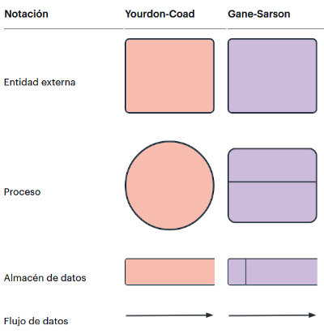
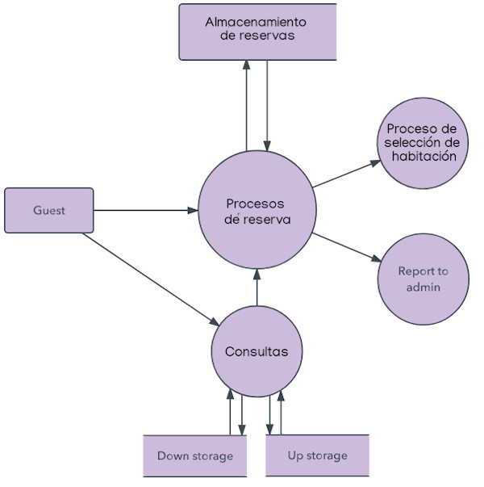
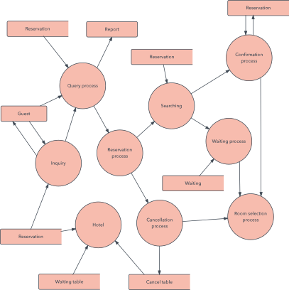

Un Diagrama de Flux de Dades ( DFD ) traça el flux de la informació per a qualsevol procés o sistema. Amb el DFD es pot representar el futur funcionament del programa a desenvolupar.
Empra símbols definits, com a rectangles, cercles i fletxes, a més d'etiquetes de text breus, per a mostrar les entrades i eixides de dades, els punts d'emmagatzematge i les rutes entre cada destí. Els diagrames de flux de dades poden variar des de simples panorames de processos fins i tot traçats a mà, fins a DFD molt detallats i amb múltiples nivells que aprofundeixen progressivament en com es manegen les dades. Es poden usar per a analitzar un sistema existent o per a modelar un nou. De manera similar a tots els millors diagrames i gràfics, un DFD pot amb freqüència "dir" visualment coses que serien difícils d'explicar en paraules i funcionen per a audiències tant tècniques com no tècniques, des de desenvolupadors fins a directors. Eixa és la raó per la qual els DFD continuen sent tan populars després de tots aquests anys.

Nivells d'un DFD
Un DFD pot aprofundir progressivament en més detall per mitjà de nivells i capes, concentrant-se en una peça en particular. Els nivells d'un DFD es numeren 0, 1 o 2 i a vegades arriben fins i tot fins al Nivell 3 o més. El nivell necessari de detall depén de l'abast del que estàs tractant d'aconseguir.
- Nivell 0: Diagrama de context
En el diagrama de context es caracteritzen totes les interaccions que realitza un sistema amb el seu entorn (entitats externes), aquestes poden ser altres sistemes, sectors interns a l'organització, o factors externs a aquesta. Es dibuixa un només procés que representa al sistema en qüestió i s'escriu el seu nom en aquesta bambolla com un substantiu comú més adjectius. D'ell solament parteixen els fluxos de dades que denoten les interrelacions entre el sistema i els seus agents externs, no admetent-se altres processos ni emmagatzematges en el dibuix, ja que aquests són processos estructurats i ordenats. Està dissenyat per a ser una vista ràpida que mostra el sistema com un únic procés de nivell alt, amb la seua relació amb entitats externes.

- Nivell 1: Diagrama de nivell superior
Brinda un desglossament de peces més detallat del diagrama a nivell de context. Es destaquen les principals funcions que el sistema duu a terme.

- Nivell 2: Diagrama de detall o expansió
Va un pas més enllà, ja que comença a desglossar i analitzar seccions específiques del diagrama de nivell 1. Com més profunds siguen els nivells, més text tindrà el diagrama. Per això, molts dissenyadors de sistemes prefereixen no anar més enllà del nivell 2

És possible l'avanç cap als Nivells 3, 4 i més, però anar més enllà del Nivell 3 és poc usual. Fer-ho pot crear una complexitat que dificulte comunicar, comparar o modelar de manera efectiva.
més informació: https://www.lucidchart.com/pages/es/que-es-un-diagrama-de-flujo-de-datos